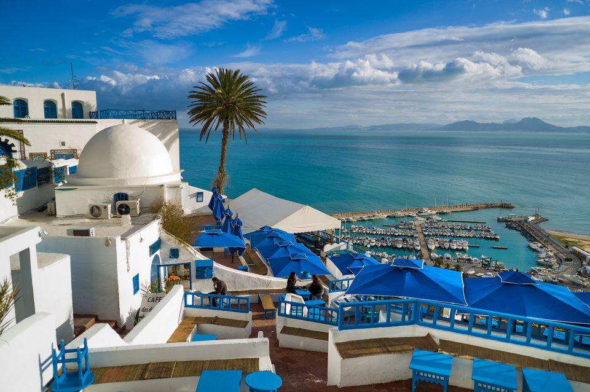
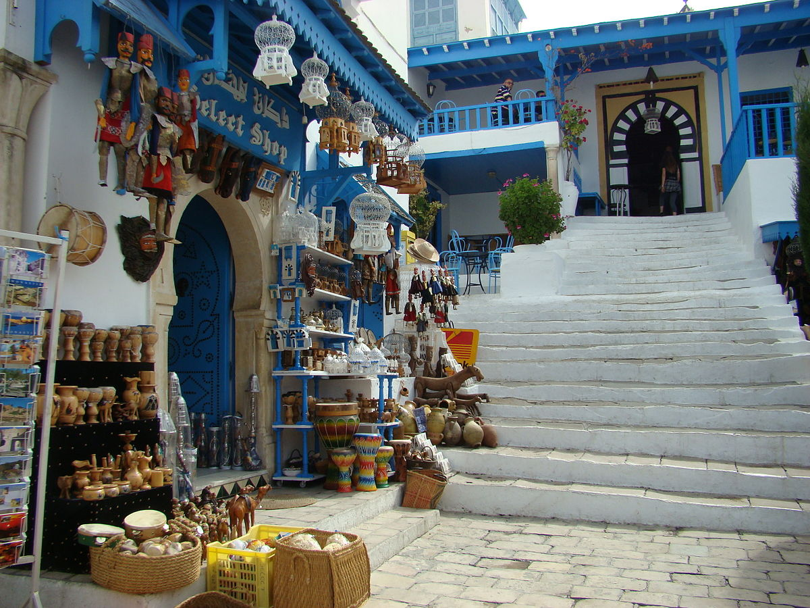
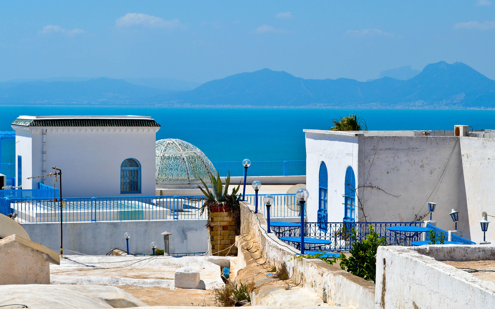

Approximately 12 miles/ 20 kilometers north of Tunis lies the idyllic seaside town of Sidi Bou Said. Perched on top of a steep cliff and surrounded by breathtaking Mediterranean views, it's the perfect antidote to the hustle and bustle of the Tunisian capital — and a favored getaway destination for locals and visitors alike. The town's cobbled streets are lined with art shops, souvenir stalls, and quaint cafés.

For many visitors, the most rewarding way to spend time in Sidi Bou Said is simply to stroll through the Old Town, exploring winding side streets and stopping to explore the town's art galleries, studios, and restaurants at leisure. The sidewalks are lined with stalls, whose wares include hand-crafted souvenirs and bottles of fragrant jasmine. Make sure that your wanderings take you up to the lighthouse, where spectacular Gulf of Tunis views awaits.

There are only four hotels to choose from in Sidi Bou Said. Of these, the most popular is La Villa Bleue, a magnificent traditional home nestled on the cliffside above the marina. Rendered in the customary shades of blue and white, the villa is a masterpiece of slender columns, intricate plasterwork, and cool marble. With only 13 rooms, it offers an intimate, relaxing experience that ties in with the town's reputation as a traveler's sanctuary.